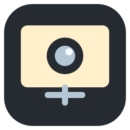
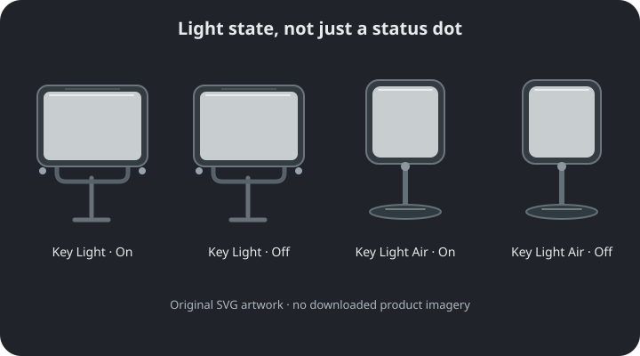

Studio
Suggested starting pointProduct-led rows. Both lights and their controls fit in one calm flyout.

Camera Light TrayDesign explorationThree tray-first layouts inspired by Control Center, with an unmistakable split between on/off and automatic/manual.
Interactive mockup
No camera access or light writes
Product-led rows. Both lights and their controls fit in one calm flyout.
A fast switchboard. Expand one light when you need brightness or warmth.
Larger equipment portraits. Scan power first, reveal controls on demand.
The illustrations are original SVGs. All devices, applications and activity shown here are example data.
One navigation rail, clear selection rules, and diagnostics only when needed. Controls below are simulated.
The wider panel and clamp of the Key Light; the square panel and circular base of the Air. Lit surfaces carry power state without needing a green badge.

Open original light SVGsA soft panel around a camera lens. Simple enough to survive at 16 pixels; the app icon uses the same silhouette.
16 / 20 / 32 px
Studio keeps controls visible; Compact saves space; Gallery gives the equipment more presence. These can share the same settings window.
Proposed: changing power, brightness or temperature puts that light in Manual for the current camera session. “Resume auto” gives control back explicitly. It must never fight your edit.
Preserve the current rule: only selected apps trigger lighting. No selection means automation will not turn anything on. An “Any app” mode would be a new, explicit opt-in—not an empty-list shortcut.
Use an explicit “All cameras” choice instead of requiring people to infer what an empty checkbox list means. Specific cameras remain independently selectable.
Keep uncertainty honest with “Checking camera” or “Camera state unknown.” Show troubleshooting on demand; do not convert missing reports into an idle status for visual tidiness.
These are reviewable mockups, not a new portable release. Native tray positioning, dismiss-on-outside-click, touch/DPI support, real manual controls, asset-model mapping and icon integration still need implementation and verification.